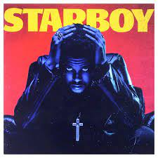

Interprete: Taylor Swift
Más Información: 1989 es el quinto álbum de estudio de la cantante y compositora estadounidense Taylor Swift, lanzado el 27 de octubre de 2014 a través del sello discográfico Big Machine Records. Swift compuso todas las canciones, en su mayoría junto con Max Martin, Karl Johan Schuster, Ryan Tedder, Jack Antonoff, Imogen Heap, entre otros.
Agregar al carritoInterprete: The Weeknd
Más Información:Starboy es el título del tercer álbum de estudio del cantante y compositor canadiense The Weeknd. XO y Republic Records lanzaron el disco el 25 de noviembre de 2016. El álbum cuenta con varios artistas invitados tales como Daft Punk, Lana Del Rey, Future y Kendrick Lamar.
 Agregar al carritoInterprete: Ariana Grande
Más Información: Sweetener es el cuarto trabajo discográfico de la cantante estadounidense Ariana Grande. Este está producido por la misma cantante. Trabajó en conjunto con el productor sueco Max Martin y los estadounidenses Pharrell Williams y Savan Kotecha, entre otros y cuenta con colaboraciones de Nicki Minaj, Pharrell y Missy Elliott.
Agregar al carrito